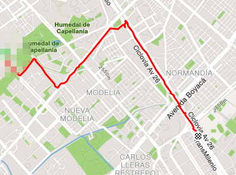
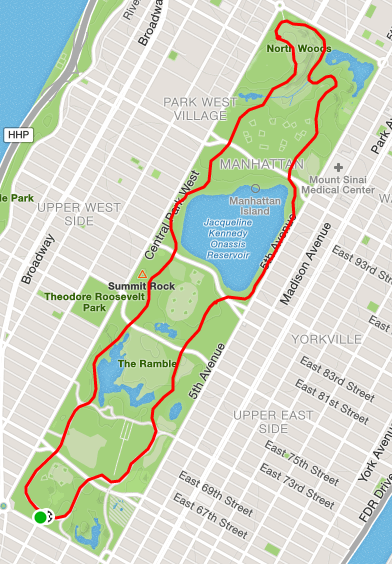
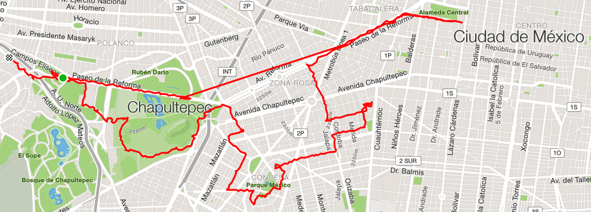

Las multiples etapas de andar en cicla por Bogotá
Todo empieza el día que cambian el lugar donde están las oficinas de tu trabajo. Ya no van a estar en el centro internacional sino en el norte, por la 85. Vives al occidente de la ciudad, así que la nueva localización te queda muy lejos. Te das cuenta que estar encerrado en un bus durante casi 3 horas al día no va a ser viable. Sin embargo por unos meses, no muchos, lo haces. Haces cuentas y entiendes que vas a perder un porcentaje no despreciable de tu vida en el infierno que es el tráfico de Bogotá.
La perspectiva de repetir dicha rutina durante varios meses o años no te suena para nada. Te planteas superficialmente varias posibilidades: mudarte cerca del trabajo o cambiarlo. Pero desistes de estas opciones. Ni siquiera se te pasa por la cabeza comprar un carro. Así que buscas un punto medio. Vas un fin de semana a los locales de bicicletas de la 13 y, por menos de medio millón de pesos, compras eso que llaman una “todoterreno”. Hace años que no montas bicicleta así que necesitas un tiempo para recordarlo. Das una vuelta por tu barrio y te das cuenta que te gusta. Te gusta sentir el viento en tu cara, controlar la velocidad y, de cierta forma, adeñuarte de las calles de una ciudad terriblemente hostil.

El punto medio que encuentras es mas bien un cuarto del recorrido total. Por las mañanas vas en bicicleta hasta la estación de Las Rojas. Encadenas la bicicleta en alguno de los sitios provistos para esto, te subes al B23 y te bajas en la estación de la 85. Por la tarde haces el recorrido contrario tomando el K23 y siempre encuentras tu bicicleta en su lugar. Tu recorrido sigue siendo incómodo y empeora en las horas pico de transmilenio. Pero por lo menos no tienes que esperar un alimentador que se demora mucho o llegar a un portal repleto de gente en tu misma situación de desespero de llegar a su trabajo o a su casa.
Los primeros meses te das cuenta del mal estado físico que tienes. Al principio las subidas te resultan titánicas y para subir un puente te tienes que bajar de la bicicleta por que las piernas no te dan. Los escasos 20 minutos que duran tu recorrido hasta la estación de transmilenio te resultan agotadores. Vas lento y además vas cansado.
Al principio estás muy atento de tu recorrido: no usas audifonos y siempre estás mirando atentamenteal frente, a los lados, al piso. Empiezas a memorizar inconscientemente las pequeñas grietas e imperfectos que marcan la ciudad, las prevees en tu recorrido y las esquivas cuando te les aproximas. La mayoría de tus recorridos son sobre las seguras ciclovías. Las pocas veces que atreves a ir en la misma calle que los carros lo haces con miedo y prevención. Para tí andar en una avenida, al lado de automoviles, es impensable.
Repites durante varios meses el mismo recorrido de 5.5km. No hay muchas novedades y no sientes muchos cambios. Siempre cansado, siempre un gran esfuerzo. Excepto que empiezas a ir más rápido, a ponerte de pie en la bicicleta para poder acelerar. Hasta que una noche tienes un accidente. Vas a adelantar a otro ciclista por la izquierda, pero él gira de repente a la derecha. Ambas bicicletas se golpean y caes de frente, tu cabeza directamente contra el piso. No alcanzas a extender tus brazos. El casco y la visera absorven una parte del impacto. La otra parte la absorve tu cara. Te levantas y acercas tus manos a tu cara, esperando encontrar la sensación humeda de la sangre. No hay nada, solo un incipiente dolor que se agudizará en los próximos días. El otro ciclista resulta ménos herido. La culpa es, en su mayoría, tuya. Empiezas a ir más lento, el dolor recordándote de las consecuencias.
 Cuando viajas de vacaciones a otra ciudad buscas la forma de en bicicleta. En tu cabeza sientes que puedes conocer un poco mejor una ciudad si usas

Buscas una academia de conducción. Quieres ver a que otros